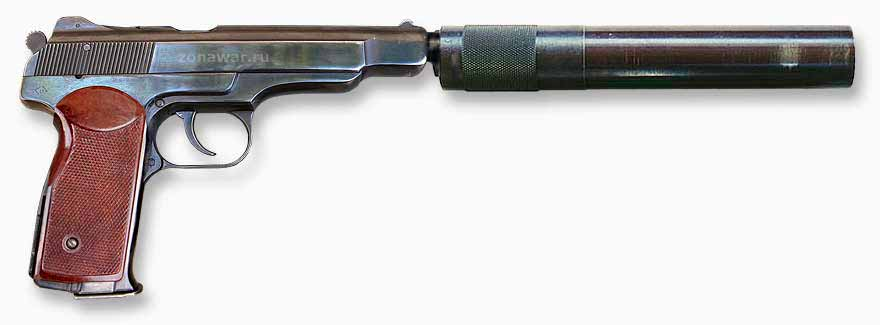

АПБ
Описание
Пистолет АПБ мало чем отличается от обычного АПС: как и у АПС, автоматика АПБ основана на принципе отдачи свободного затвора, ударный механизм курковый, курок расположен открыто, в рукояти расположен инерционный замедлитель для снижения темпа стрельбы. Ствол имеет 2 группы отверстий: возле патронника и ближе к дулу, предназначенных для отведения части пороховых газов напрямую в первую камору глушителя, что снижает скорость пули до 290 м/с[6]. Для отвода газов на ствол АПБ надета специальная трубка. Она выступает вперед из кожуха-затвора для установки глушителя. Жёсткая кобура-приклад заменена тканевой кобурой и съёмным проволочным прикладом.
АК74М построен на «классической схеме АК», отличающейся надёжностью функционирования, в том числе в затруднённых условиях эксплуатации, высокой технологичностью производства и лёгкостью в освоении личным составом с любым уровнем подготовки.
Данная модель является эволюционным развитием автоматов АК74 и АКС74 и отличается от них полимерными частями (взамен деревянных), наличием боковой планки для установки прицелов.
История:
К концу 1960-х годов ГРУ МО СССР была поставлена задача создания бесшумного пистолета, более точного, чем ПБ. За основу был предложен пистолет Стечкина, как оружие, уже оценённое специальными подразделениями. Среди требований было обеспечить бесшумную или малошумную стрельбу, а также заменить громоздкую деревянную кобуру-приклад на мягкую кобуру и разработать лёгкий отъёмный приклад. Разработка велась на ЦНИИточмаш под руководством А. С. Неугодова. В 1972 году разработка под рабочим индексом АО-44 прошла испытания и была принята на вооружение под наименованием Автоматический пистолет бесшумный (АПБ). Благодаря относительно длинному стволу АПБ фактически победил в ОКР «Букет», в котором не участвовал: все три опытных бесшумных пистолета-пулемёта не удовлетворили требованиям по кучности.